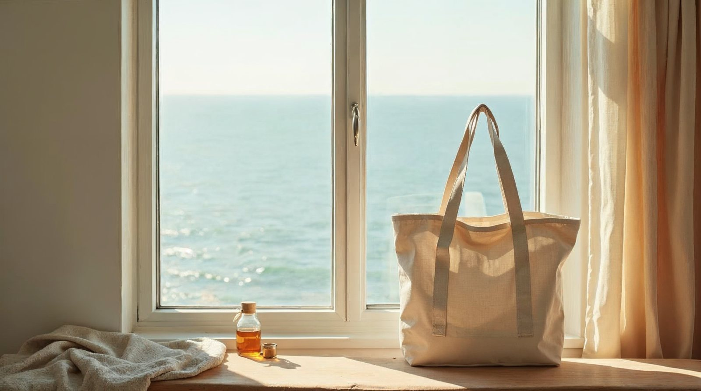
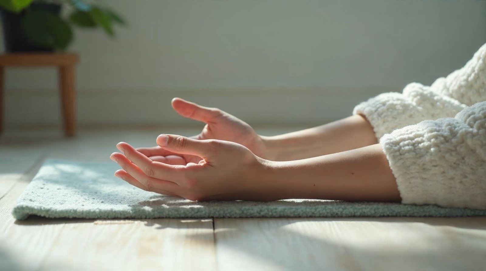
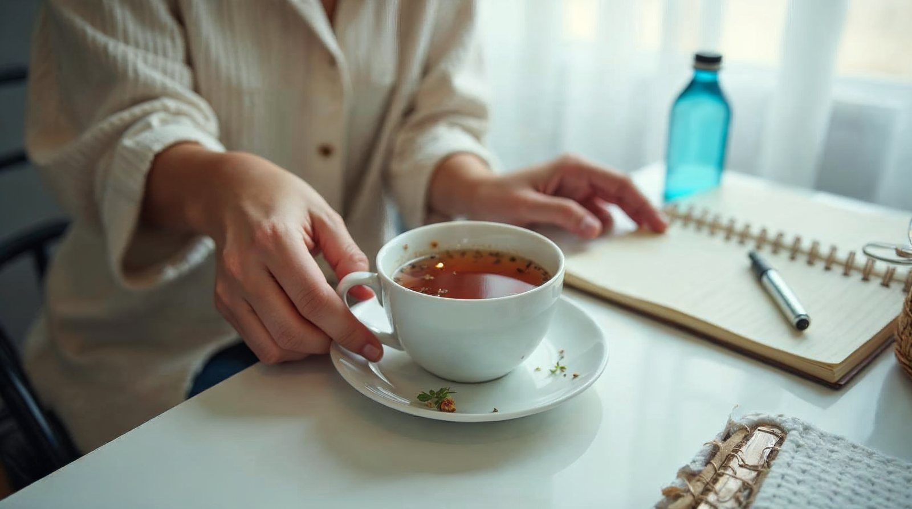
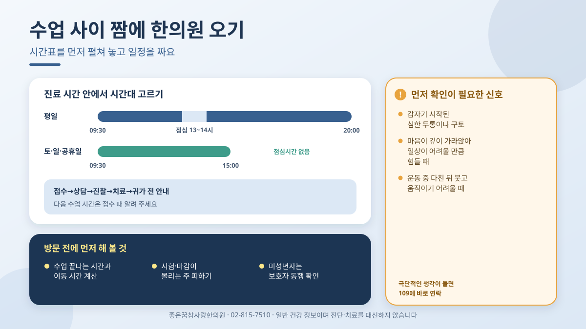

이종호 한의사 감수좋은꿈참사랑한의원 대표원장 (한의사 면허번호 19769)발행 2026-11-23 · 수정 2026-11-26
이 글의 차례
- 왜 일정 잡기가 어려울까요
- 공부 자세 때문인지, 다른 까닭인지 어떻게 가려 볼까요?
- 먼저 이렇게 여쭙니다
- 방문 전에 먼저 해 볼 수 있는 것
- 한의원에서 함께 살필 수 있는 경우
- 며칠·몇 주 지켜보고, 언제 바로 진료를 받을까요
- 상황별로 이렇게 해 보세요
- 스스로 확인해 보는 체크 목록
- 첫 방문 진료는 이렇게 진행됩니다
- 책상 앞에서 할 수 있는 작은 습관
- 가방과 걷는 자세도 살펴보세요
- 학생이 혼자 왔을 때는 무엇을 말하면 될까요?
- 에너지 음료와 커피, 얼마나 마시나요?
- 진료 뒤 학원이나 독서실로 바로 가도 될까요?
- 공강이나 쉬는 시간에 할 수 있는 스트레칭
- 잠드는 시간을 지키는 작은 약속
- 진료 날 이렇게 준비해 오면 좋습니다
- 다시 올 때는 이렇게 이어서 봅니다
- 이렇게 기록해 오시면 상담이 쉬워집니다
- 시험 기간과 방학, 언제 오는 게 좋을까요?
- 진료 사이에는 이렇게 기록해 보세요
- 보호자께 드리는 말씀
- 이런 증상은 먼저 확인이 필요합니다
- 함께 읽으면 좋은 글
수업과 학원 일정이 빡빡한 학생은 한의원에 올 시간을 내기가 쉽지 않습니다. 노량진·상도동처럼 학교와 학원이 가까운 곳에서는 수업 사이 짬을 이용하는 학생도 많아, 시간표를 먼저 펼쳐 놓고 일정을 짜면 부담이 줄어듭니다.
왜 일정 잡기가 어려울까요
- 수업이 끝나는 시간과 학원 시작 시간 사이가 짧아 이동만으로 빠듯합니다.
- 시험 기간에는 몸이 불편해도 진료를 미루다 불편이 커지기도 합니다.
- 미성년자는 보호자 동행이나 동의가 필요할 수 있어 미리 확인해야 합니다.
- 끼니를 거르고 오면 진료 뒤 오후가 더 힘들어질 수 있습니다.
공부 자세 때문인지, 다른 까닭인지 어떻게 가려 볼까요?
학생들이 말하는 목·허리 불편은 대부분 오래 앉아 있는 시간과 관련이 있습니다. 다만 같은 뻐근함이라도 언제 심해지는지를 보면 짐작할 단서가 조금씩 다릅니다.
- 앉아 있는 시간이 길수록 심해지고 쉬거나 자고 나면 풀린다면, 자세와 앉는 시간 쪽을 먼저 살펴봅니다.
- 아침에 일어날 때부터 몸이 무겁고 낮에 졸음이 쏟아진다면, 잠이 부족하거나 잠드는 시각이 흔들린 것은 아닌지 함께 봅니다.
- 시험 직전에만 배가 아프거나 머리가 조인다면, 긴장과 식사 리듬이 함께 엮였을 수 있습니다.
- 한쪽 팔이나 다리로 저린 느낌이 내려가고 자세를 바꿔도 계속된다면, 혼자 판단하지 말고 진료를 받아 확인해 보세요.
어느 쪽인지 딱 잘라 구분되지 않는 경우가 많습니다. 그래서 진료실에서는 아픈 곳과 함께 잠, 식사, 시간표를 같이 여쭙고 맥을 짚어 몸 전체를 봅니다.
먼저 이렇게 여쭙니다
- 하루 중 앉아 있는 시간은 어느 정도인가요?
- 불편한 곳은 공부할 때, 아침, 밤 중 언제 심해지나요?
- 잠드는 시간과 일어나는 시간은 언제인가요?
- 끼니를 거르거나 에너지 음료를 자주 마시나요?

방문 전에 먼저 해 볼 수 있는 것
- 수업이 끝나는 시간과 이동 시간을 계산하기
- 평일 09:30~20:00(점심 13:00~14:00 제외), 토·일·공휴일 09:30~15:00(점심시간 없음) 안에서 시간대 고르기
- 시험이나 과제 마감이 몰리는 주는 피하고 여유 있는 날 예약하기
- 미성년자라면 보호자 동행이 필요한지 미리 확인하기
한의원에서 함께 살필 수 있는 경우
- 오래 앉아 공부하다 목과 허리가 뻐근할 때 책상과 의자 높이를 함께 묻습니다.
- 시험 기간에 속이 불편하거나 잠이 얕다고 느낄 때 식사와 수면 습관을 함께 살핍니다.
- 두통과 눈 피로가 반복된다고 느낄 때 화면 사용과 휴식 시간을 함께 묻습니다.
좋은꿈참사랑한의원 진료는 접수, 상담, 진찰, 치료, 귀가 전 안내 순서로 진행됩니다. 다음 수업 시간이 있다면 접수할 때 알려 주세요. 상담에서는 공부 자세와 잠, 식사를 함께 듣고, 필요하다고 판단될 때 침이나 추나 등 방법을 정한 뒤 학교와 학원에서 지킬 수 있는 요령을 알려 드립니다.

며칠·몇 주 지켜보고, 언제 바로 진료를 받을까요
- 공부한 날 저녁에만 목과 어깨가 뻐근하고 자고 나면 풀린다면, 며칠 동안 자세와 쉬는 시간을 바꿔 보며 지켜볼 수 있습니다.
- 자고 일어나도 뻐근함이 남는 날이 1~2주 넘게 이어지거나, 팔이나 다리로 저린 느낌이 내려간다면 시험 일정과 맞춰 진료를 받아 보세요.
- 시험 기간에 잠드는 데 30분 넘게 걸리는 날이 일주일에 여러 번 반복되면, 잠과 식사 기록을 가지고 상담을 받아 보셔도 좋습니다.
- 갑자기 시작된 심한 두통이나 구토가 있으면 기다리지 말고 가까운 응급실로 가시고, 운동 중 다친 뒤 붓고 움직이기 어려운 경우도 미루지 말고 의료기관을 먼저 찾으세요.
상황별로 이렇게 해 보세요
예를 들어 평일 오후 4시에 수업이 끝나고 6시에 학원이 시작되는 고등학생이라면, 4시 반 전후로 예약을 잡고 진료 뒤 간단히 끼니를 챙겨 학원에 가는 동선이 현실적입니다. 미성년자라면 보호자 동행이 필요한지 방문 전에 전화로 확인해 주세요.
예를 들어 노량진에서 하루 종일 앉아 공부하는 수험생이라면, 평일 저녁 8시 진료가 끝나기 전 여유 있는 시간이나 토·일·공휴일 09:30~15:00 중 모의고사가 없는 날을 고르는 것이 좋습니다. 진료 날에는 독서실 의자 높이와 책상 높이를 메모해 오시면 자세 이야기를 나누기 쉽습니다.
예를 들어 공강 시간이 두 시간쯤 비는 대학생이라면, 그 시간에 맞춰 네이버 예약으로 시간을 먼저 잡아 두면 기다리는 시간을 줄일 수 있습니다. 평일 점심 13:00~14:00은 진료하지 않으니 그 앞뒤로 잡아 주세요.
스스로 확인해 보는 체크 목록
- 하루에 앉아 있는 시간이 8시간을 넘나요?
- 50분 공부하면 한 번은 일어나서 몸을 움직이나요?
- 잠드는 시각이 매일 1시간 넘게 들쭉날쭉한가요?
- 아침이나 점심을 자주 거르나요?
- 에너지 음료나 커피를 하루 두 잔 넘게 마시나요?
- 시험이나 과제 마감이 몰린 주를 달력에 표시해 두었나요?
- 미성년자라면 보호자와 방문 일정을 이야기했나요?
첫 방문 진료는 이렇게 진행됩니다
처음 오면 접수에서 기본 정보를 적고, 다음 수업 시간이 있다면 그때 알려 주세요. 상담에서는 불편한 곳과 심해지는 때, 공부 자세와 잠, 식사를 함께 여쭙고, 진맥과 신체 진찰을 합니다. 필요하다고 판단될 때는 초음파로 근육과 힘줄을 확인하기도 합니다.
오늘 받을 치료와 이유를 먼저 설명한 뒤 치료를 하고, 귀가 전에는 책상 앞에서 할 수 있는 요령과 다음 진료 날짜를 시험 일정에 맞춰 정합니다. 초진은 재진보다 시간이 더 걸릴 수 있어 첫날은 일정을 넉넉히 잡는 것이 좋습니다. 다른 병원 검사 결과가 있다면 함께 가져오세요.
책상 앞에서 할 수 있는 작은 습관
- 의자에 앉을 때는 엉덩이를 등받이 끝까지 붙이고, 발바닥이 바닥에 닿도록 의자 높이를 맞춥니다.
- 모니터나 책은 눈높이에 가깝게 올려 고개가 앞으로 숙여지는 시간을 줄입니다.
- 50분 공부하면 일어나서 물을 마시러 가거나 계단을 한 층 오르내리는 식으로 몸을 움직여 줍니다.
- 휴대폰은 공부하는 동안 손이 닿지 않는 곳에 두면 목을 숙이는 시간도 줄고 집중에도 도움이 됩니다.
- 잠들기 1시간 전에는 화면을 끄고 조명을 낮추면 잠드는 시간을 줄이는 데 도움이 됩니다.
가방과 걷는 자세도 살펴보세요
책과 노트북, 문제집을 모두 넣은 가방은 생각보다 무겁습니다. 한쪽 어깨에만 메고 다니면 그쪽 어깨가 올라가고 목이 반대로 기울어지기 쉽습니다.
- 가방은 두 어깨에 메고, 끈 길이는 가방이 허리 위쪽에 오도록 맞춥니다.
- 그날 필요 없는 책은 사물함이나 집에 두고 다닙니다.
- 걸을 때 휴대폰을 보며 고개를 숙이는 시간을 줄여 보세요.
학생이 혼자 왔을 때는 무엇을 말하면 될까요?
처음 혼자 오면 무슨 말부터 해야 할지 몰라 짧게 대답하고 끝내는 학생이 많습니다. 아래 세 가지만 기억해 두면 충분합니다.
- 어디가 불편한지, 언제부터 그랬는지
- 공부할 때, 자고 일어났을 때 가운데 언제 더 불편한지
- 오늘 몇 시까지 다음 일정에 가야 하는지
나머지는 진료실에서 제가 차례로 여쭙습니다. 모르는 말이 나오면 다시 설명해 달라고 편하게 말해도 됩니다.
에너지 음료와 커피, 얼마나 마시나요?
시험 기간에는 졸음을 쫓으려 에너지 음료나 커피를 여러 잔 마시는 학생이 많습니다. 늦은 오후에 마신 카페인은 밤에 잠드는 시간을 늦추고, 잠이 얕아지게 할 수 있습니다.
하루에 몇 잔, 몇 시쯤 마시는지 적어 오면 잠 이야기를 나눌 때 도움이 됩니다. 오후 늦게 마시는 양부터 조금씩 줄여 보세요.
진료 뒤 학원이나 독서실로 바로 가도 될까요?
대부분은 진료를 마치고 바로 다음 일정으로 가셔도 됩니다. 다만 그날 치료 내용에 따라 지킬 점이 있을 수 있어, 귀가 전에 알려 드리는 내용을 휴대폰에 적어 두세요. 끼니를 거르고 왔다면 가는 길에 간단히 먹고 가는 것이 좋습니다.
공강이나 쉬는 시간에 할 수 있는 스트레칭
- 의자에 앉은 채 양손을 깍지 껴서 머리 위로 쭉 뻗고 10초 버팁니다.
- 고개를 천천히 좌우로 기울이며 목 옆을 늘려 줍니다.
- 일어서서 허리에 손을 대고 몸을 뒤로 살짝 젖혀 봅니다.
한 번에 1~2분이면 충분합니다. 수업이 끝날 때마다 하나씩만 해도 하루에 몇 번은 굳은 몸을 풀 수 있습니다.
잠드는 시간을 지키는 작은 약속
- 평일과 주말의 일어나는 시각 차이를 한 시간 안쪽으로 맞춥니다.
- 침대에서는 공부하지 않고, 누우면 휴대폰을 손에 닿지 않는 곳에 둡니다.
- 잠이 오지 않아 30분 넘게 뒤척이면 잠깐 일어나 조용히 있다가 다시 눕습니다.

진료 날 이렇게 준비해 오면 좋습니다
- 수업이나 학원 시간표를 휴대폰으로 찍어 오면 다음 진료 날짜를 정하기 쉽습니다.
- 너무 배고프거나 배부른 상태는 피하고, 가볍게 먹고 오는 편이 좋습니다.
- 교복이나 몸에 꼭 끼는 옷보다 목·허리·어깨를 살피기 편한 옷이면 진찰이 수월합니다.
- 복용 중인 약이나 최근 다른 병원에서 받은 검사 결과가 있다면 함께 챙겨 오세요.
- 미성년자라면 보호자와 함께 오거나, 보호자 동의가 필요한지 방문 전 전화로 확인해 주세요.
다시 올 때는 이렇게 이어서 봅니다
다시 오면 지난번 이야기한 공부 자세와 잠, 식사가 그사이 어땠는지부터 묻고, 진맥도 다시 짚습니다. 시험 기간과 겹친다면 진료 간격을 일정에 맞춰 조정하고, 시험이 끝난 뒤 흐트러진 생활 리듬을 다시 잡는 이야기도 함께 나눕니다.
시험이 끝난 직후에는 긴장이 풀리면서 몸살 기운이나 피로가 한꺼번에 몰려오는 경우도 있어, 시험 직후 일주일의 잠과 컨디션도 짧게 적어 두면 다음 진료에 도움이 됩니다.
이렇게 기록해 오시면 상담이 쉬워집니다
- 불편한 곳과 심해지는 때(공부할 때, 아침, 밤)
- 하루 수면 시간과 식사 시간, 간식과 음료 습관
- 방과 후 활동이나 운동 일정
시험 기간과 방학, 언제 오는 게 좋을까요?
처음 진료를 받는다면 시험 직후나 방학처럼 일정에 여유가 있는 때가 좋습니다. 첫날은 문진과 진찰에 시간이 들고, 생활 습관 이야기를 나눌 여유도 필요하기 때문입니다.
시험을 앞두고 불편이 걱정된다면 시험 2~3주 전쯤 한 번 오시는 것을 권합니다. 시험 주간에 처음 오면 몸도 마음도 바빠 이야기를 충분히 나누기 어렵습니다.
이미 다니고 있는 학생이라면 시험 주간에는 진료 간격을 일정에 맞게 조정하고, 시험이 끝난 뒤 흐트러진 리듬을 다시 잡는 쪽으로 이어 갑니다.
진료 사이에는 이렇게 기록해 보세요
휴대폰 메모에 하루 한 줄이면 충분합니다. 바쁜 학생일수록 길게 쓰려고 하면 오래가지 못합니다.
- 날짜와 그날 앉아 있던 시간(대략)
- 잠든 시각과 일어난 시각
- 목·허리 불편 정도를 0~10 숫자로
- 끼니를 거른 날에는 '거름' 한 단어
일주일 기록만 있어도 모의고사 다음 날 더 불편했는지, 잠이 짧은 날 두통이 잦았는지 같은 흐름을 함께 볼 수 있습니다.
보호자께 드리는 말씀
미성년자 학생과 함께 오신다면 아이의 하루 시간표를 미리 알려 주시면 상담이 수월합니다. 학원 요일, 귀가 시각, 잠드는 시각처럼 아이가 스스로 잘 기억하지 못하는 부분을 보호자께서 채워 주시면 됩니다.
진료실에서는 아이가 먼저 자기 몸 이야기를 하도록 조금 기다려 주세요. 짧은 대답 속에도 아이만 아는 정보가 있습니다. 보호자께서 보신 모습은 그다음에 덧붙여 주시면 충분합니다.
이런 증상은 먼저 확인이 필요합니다
- 갑자기 시작된 심한 두통이나 구토
- 마음이 깊이 가라앉아 공부와 일상이 어려울 만큼 힘든 경우
이런 신호가 있으면 한의원보다 가까운 병원이나 응급실을 먼저 찾으세요.
함께 읽으면 좋은 글
- 노량진에서 하루 종일 앉아 공부하는 수험생의 허리와 목은 어떻게 살피나요?
- 대학생이 혼자 처음 한의원에 올 때는 무엇을 준비하면 되나요?
- 시험 기간에 잠이 줄고 불안할 때는 어떻게 지내면 좋을까요?

여쭙는 것
- 하루 중 앉아 있는 시간은 어느 정도인가요?
- 불편한 곳은 공부할 때, 아침, 밤 중 언제 심해지나요?
- 잠드는 시간과 일어나는 시간은 언제인가요?
한의원에서 함께 살필 것
- 오래 앉아 공부하다 목과 허리가 뻐근할 때 책상과 의자 높이를 함께 묻습니다.
- 시험 기간에 속이 불편하거나 잠이 얕다고 느낄 때 식사와 수면 습관을 함께 살핍니다.
- 두통과 눈 피로가 반복된다고 느낄 때 화면 사용과 휴식 시간을 함께 묻습니다.
먼저 확인이 필요한 신호
- 갑자기 시작된 심한 두통이나 구토
- 마음이 깊이 가라앉아 공부와 일상이 어려울 만큼 힘든 경우
한눈에 보는 표
| 구분 | 핵심 |
|---|---|
| 여쭙는 것 | 하루 중 앉아 있는 시간은 어느 정도인가요? 불편한 곳은 공부할 때, 아침, 밤 중 언제 심해지나요? |
| 한의원에서 함께 살필 것 | 오래 앉아 공부하다 목과 허리가 뻐근할 때 책상과 의자 높이를 함께 묻습니다. 시험 기간에 속이 불편하거나 잠이 얕다고 느낄 때 식사와 수면 습관을 함께 살핍니다. |
| 먼저 확인이 필요한 신호 | 갑자기 시작된 심한 두통이나 구토 마음이 깊이 가라앉아 공부와 일상이 어려울 만큼 힘든 경우 |
자주 묻는 질문
학교 마치고 바로 가면 시간이 괜찮은가요?
평일은 20시까지 진료하므로 이동 시간을 계산해 여유 있게 예약하시는 것이 좋습니다.
혼자 가도 되나요?
나이와 상황에 따라 다르므로 방문 전에 보호자 동행이 필요한지 문의해 주세요.
시험 기간에 가도 되나요?
가능하지만 일정이 빠듯하다면 시험 직후나 여유 있는 날로 나누어 계획하는 방법도 있습니다.
시험 전날 새로운 걸 시도해도 되나요?
시험 직전에는 새로운 시도를 늘리기보다 평소 리듬을 지키는 쪽을 먼저 생각합니다.
진료가 길어져 다음 수업에 늦을까 걱정돼요.
접수할 때 다음 일정 시각을 알려 주시면 그 시간에 맞춰 진료 범위를 정합니다. 첫날은 시간을 넉넉히 잡아 주세요.
좋은꿈참사랑한의원은 재진 때 지난번 이야기부터 이어서 여쭙니다. 진료시간과 예약은 오시는 길에서 확인하세요.
어디서 상담받을 수 있나요?
좋은꿈참사랑한의원은 서울 동작구 만양로2길 2 신성빌딩 3층·5층(서울 동작구 상도동, 7호선 상도역 3번 출구 근처)에 있습니다. 한의사 3명(이종호 대표원장, 조영기 수석진료원장, 정원영 진료원장)이 진료합니다. 진료시간은 평일 09:30~20:00(점심 13:00~14:00), 토·일·공휴일 09:30~15:00이며, 방문 전 전화로 확인을 권합니다. 예약은 네이버 예약, 카카오톡 상담, 전화 02-815-7510로 받습니다.
이 글은 일반적인 건강 정보이며 개인의 진단이나 치료를 대신하지 않습니다. 증상이 있거나 복용 중인 약이 있다면 진료를 통해 확인하세요. 치료 효과는 개인마다 다를 수 있습니다.
작성 기준: 일반적으로 알려져 있는 건강 정보를 참고해 정리했습니다(대표원장 감수). 증상 기록은 1~2주 동안 하루 1회, 비슷한 시간에 적어 오시면 지난 상태와 비교하기 쉽습니다.